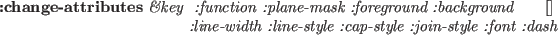

gcontext [クラス]
:super Xobject
:slots (gcid GCValues)
-
- graphic context(GC)を定義する。
Euslispの中で、全てのwindowはデフォルトGCを持っている。

-
- 与えられた属性でGCを作成する。
drawableは、画面と画面の深さを知るためにXserverにより使用される。
結果のGCは、同じ画面上で作成される限り、
どのdrawableでも使用できる。
:gc [メソッド]
-
- XのGC IDを返す。
:free [メソッド]
-
- このGCを開放する。
:copy [メソッド]
-
- このGCのコピーを作る。
:foreground &optional color [メソッド]
-
- もし、colorが与えられたならば、
文字色にcolorを設定する。colorはピクセル値である。
:background &optional color [メソッド]
-
- もし、colorが与えられたならば、
背景色にcolorを設定する。colorはピクセル値である。
:foreback fore back [メソッド]
-
- 一度に文字色と背景色を設定する。
:planemask &optional plane-mask [メソッド]
-
- plane-maskを設定する。
:function x [メソッド]
-
- 描画機能を設定する。
xは、以下に示す数字かキーワードの内の1つである。
0=Clear, 1=And, 2=AndReverse, 3=Copy, 4=AndInverted, 5=NoOp, 6=Xor, 7=Or,
8=Nor, 9=Equiv, 10=Invert,
11=XorReverse, 12=CopyInverted, 13=OrInverted,
14=Nand, 15=Set, :clear, :and,
:andReverse, :copy, :andInverted,
:NoOp, :Xor, :Or, :Nor, :Equiv, :Invert, :XorReverse,
:CopyInverted,
:OrInverted, :Nand, :Set
:font x [メソッド]
-
-
このGCのフォント属性を設定する。
xは、フォント名あるいはフォントIDである。
もし、xがフォント名（文字列）であったならば、:fontは
フォントIDを決めるためにx:LoadQueryFontを呼び出す。
もし、見つからなかった場合、"no such font ..."が警告される。
もし、xがNIL（与えられなかった）ならば、このGCの現在の
フォントIDが返される。
:line-width x [メソッド]
-
- 線幅をピクセル数xで設定する。
:line-style x [メソッド]
-
- 線スタイル(実線、点線など)を設定する。
:dash &rest x [メソッド]
-
- xのそれぞれの要素は、整数である。
:dashは、線スタイルの点線パターンを設定する。
:tile pixmap [メソッド]
-
- pixmapをこのGCのタイルパターンに設定する。
:stipple pixmap [メソッド]
-
- pixmapをこのGCの点画に設定する。
:get-attribute attr [メソッド]
-
- 属性値を得る。
attrは、:function, :plane-mask, :foreground,
:background, :line-width, :line-style, :cap-style, :join-style,
:fill-style, :fill-rule, :fontの内の１つである。
属性値を表す整数が返される。

-
- 属性値を変更する。
同時に複数の属性値を変更できる。
font-id fontname [関数]
-
-
もし、fontnameが整数であるなら、フォントIDとみなしてその値を返す。
もし、fontnameが文字列であるなら、x:LoadQueryFontを使用して
フォント構造を得て、そのフォントIDを返す。
fontnameは、正確な名前の略語でも良い。例えば、
24ポイントのクーリエフォントとして"*-courier-24-*"を指定できる。
もし、フォントが見つからなければ、can't load fontの警告を
出力する。
textdots str font-id [関数]
-
-
str文字列のascent descent widthをドット単位に示す3つの整数のリストを
返す。
2014-08-30